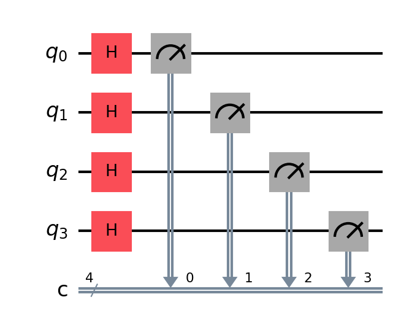

import qiskit
size = 4
qc = qiskit.QuantumCircuit(size, size)
for i in range(size):
qc.h(i)
#
for i in range(size):
qc.measure(i, i)
qc.draw(output='mpl', scale=1.5)

from qiskit_aer import Aer
from qiskit.visualization import plot_histogram
sim = Aer.get_backend('aer_simulator')
job = sim.run(qc, shots=10000)
result = job.result()
counts = result.get_counts()
plot_histogram(counts, figsize=(12,8))

counts
{'1100': 645,
'1101': 598,
'1111': 625,
'0001': 627,
'1001': 646,
'0101': 618,
'1110': 626,
'0000': 612,
'0010': 638,
'1000': 613,
'0110': 583,
'0111': 603,
'0011': 653,
'1011': 624,
'0100': 654,
'1010': 635}
svs = np.array([[1, 0], [np.log2(50), 0], [np.log2(50), 10**6], [1, 10**6], [1, 0]]).T
tns = np.array([[np.log2(25), 0], [np.log2(65536), 0], [np.log2(65536), 100], [np.log2(25), 100], [np.log2(25), 0]]).T
import matplotlib.pyplot as plt
plt.figure(figsize=(15,8))
plt.xlim(2, 16)
plt.ylim(1, 10**6)
plt.yscale('log')
plt.fill(svs[0], svs[1], fc='green', alpha=0.5)
plt.fill(tns[0], tns[1], fc='blue', alpha=0.5)
loc = [i for i in range(1, 17)]
lab = [2**i for i in range(1, 17)]
plt.xticks(loc, lab, fontsize=15)
plt.yticks(fontsize=15)
plt.text(7, 8, "Tensor-Network Simulators", fontsize=24)
plt.text(3, 8, "State-Vector Simulators", fontsize=24, rotation=90)
plt.show()
---------------------------------------------------------------------------
NameError Traceback (most recent call last)
Cell In[4], line 1
----> 1 svs = np.array([[1, 0], [np.log2(50), 0], [np.log2(50), 10**6], [1, 10**6], [1, 0]]).T
2 tns = np.array([[np.log2(25), 0], [np.log2(65536), 0], [np.log2(65536), 100], [np.log2(25), 100], [np.log2(25), 0]]).T
4 import matplotlib.pyplot as plt
NameError: name 'np' is not defined
x = np.arange(0, 17)
y = np.power(2, x)
import matplotlib.pyplot as plt
plt.figure(figsize=(15,8))
plt.xlim(0, 16)
#plt.ylim(1, 10**6)
plt.yscale('log')
plt.plot(x, y, 'o-', color='green', lw=4)
plt.fill_between(x, y, np.zeros(x.shape[0]), fc='blue', alpha=0.1)
plt.xticks(fontsize=15)
plt.yticks(fontsize=15)
plt.xlabel("No. of Qubits", fontsize=18)
plt.ylabel("No. of Bits", fontsize=18)
plt.show()

plt.fill_between?
Signature:
plt.fill_between(
x: 'ArrayLike',
y1: 'ArrayLike | float',
y2: 'ArrayLike | float' = 0,
where: 'Sequence[bool] | None' = None,
interpolate: 'bool' = False,
step: "Literal['pre', 'post', 'mid'] | None" = None,
*,
data=None,
**kwargs,
) -> 'PolyCollection'
Docstring:
Fill the area between two horizontal curves.
The curves are defined by the points (*x*, *y1*) and (*x*,
*y2*). This creates one or multiple polygons describing the filled
area.
You may exclude some horizontal sections from filling using *where*.
By default, the edges connect the given points directly. Use *step*
if the filling should be a step function, i.e. constant in between
*x*.
Parameters
----------
x : array (length N)
The x coordinates of the nodes defining the curves.
y1 : array (length N) or scalar
The y coordinates of the nodes defining the first curve.
y2 : array (length N) or scalar, default: 0
The y coordinates of the nodes defining the second curve.
where : array of bool (length N), optional
Define *where* to exclude some horizontal regions from being filled.
The filled regions are defined by the coordinates ``x[where]``.
More precisely, fill between ``x[i]`` and ``x[i+1]`` if
``where[i] and where[i+1]``. Note that this definition implies
that an isolated *True* value between two *False* values in *where*
will not result in filling. Both sides of the *True* position
remain unfilled due to the adjacent *False* values.
interpolate : bool, default: False
This option is only relevant if *where* is used and the two curves
are crossing each other.
Semantically, *where* is often used for *y1* > *y2* or
similar. By default, the nodes of the polygon defining the filled
region will only be placed at the positions in the *x* array.
Such a polygon cannot describe the above semantics close to the
intersection. The x-sections containing the intersection are
simply clipped.
Setting *interpolate* to *True* will calculate the actual
intersection point and extend the filled region up to this point.
step : {'pre', 'post', 'mid'}, optional
Define *step* if the filling should be a step function,
i.e. constant in between *x*. The value determines where the
step will occur:
- 'pre': The y value is continued constantly to the left from
every *x* position, i.e. the interval ``(x[i-1], x[i]]`` has the
value ``y[i]``.
- 'post': The y value is continued constantly to the right from
every *x* position, i.e. the interval ``[x[i], x[i+1])`` has the
value ``y[i]``.
- 'mid': Steps occur half-way between the *x* positions.
Returns
-------
`.PolyCollection`
A `.PolyCollection` containing the plotted polygons.
Other Parameters
----------------
data : indexable object, optional
If given, the following parameters also accept a string ``s``, which is
interpreted as ``data[s]`` (unless this raises an exception):
*x*, *y1*, *y2*, *where*
**kwargs
All other keyword arguments are passed on to `.PolyCollection`.
They control the `.Polygon` properties:
Properties:
agg_filter: a filter function, which takes a (m, n, 3) float array and a dpi value, and returns a (m, n, 3) array and two offsets from the bottom left corner of the image
alpha: array-like or scalar or None
animated: bool
antialiased or aa or antialiaseds: bool or list of bools
array: array-like or None
capstyle: `.CapStyle` or {'butt', 'projecting', 'round'}
clim: (vmin: float, vmax: float)
clip_box: `~matplotlib.transforms.BboxBase` or None
clip_on: bool
clip_path: Patch or (Path, Transform) or None
cmap: `.Colormap` or str or None
color: color or list of RGBA tuples
edgecolor or ec or edgecolors: color or list of colors or 'face'
facecolor or facecolors or fc: color or list of colors
figure: `~matplotlib.figure.Figure`
gid: str
hatch: {'/', '\\', '|', '-', '+', 'x', 'o', 'O', '.', '*'}
in_layout: bool
joinstyle: `.JoinStyle` or {'miter', 'round', 'bevel'}
label: object
linestyle or dashes or linestyles or ls: str or tuple or list thereof
linewidth or linewidths or lw: float or list of floats
mouseover: bool
norm: `.Normalize` or str or None
offset_transform or transOffset: `.Transform`
offsets: (N, 2) or (2,) array-like
path_effects: list of `.AbstractPathEffect`
paths: list of array-like
picker: None or bool or float or callable
pickradius: float
rasterized: bool
sizes: `numpy.ndarray` or None
sketch_params: (scale: float, length: float, randomness: float)
snap: bool or None
transform: `~matplotlib.transforms.Transform`
url: str
urls: list of str or None
verts: list of array-like
verts_and_codes: unknown
visible: bool
zorder: float
See Also
--------
fill_between : Fill between two sets of y-values.
fill_betweenx : Fill between two sets of x-values.
File: ~/miniforge/envs/jb/lib/python3.12/site-packages/matplotlib/pyplot.py
Type: function